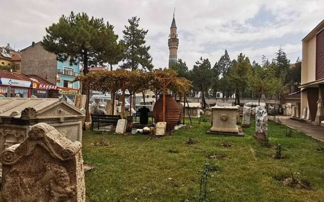
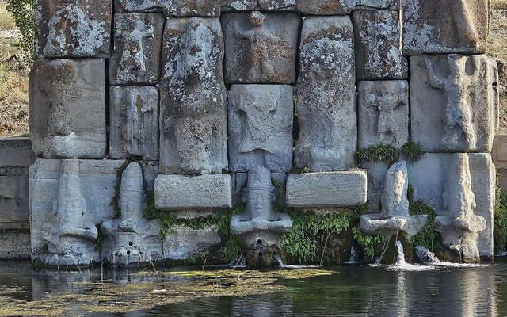

Inicio › Qué ver, provincia por provincia › Konya
La guía Kültür Varlıkları reúne 22 lugares en Konya: 10 museo, 7 yacimiento arqueológico, 2 edificio religioso, 2 lago, 1 castillo y edificio histórico. A continuación encontrará lo más destacado, un mapa y la lista completa.
⭐ Lo más destacado

1 · Konya · Yacimiento arqueológicoYacimiento de Çatalhöyük
Çatalhöyük, en la llanura de Konya, es un gran asentamiento neolítico y uno de los testigos más importantes del paso de la humanidad a una vida sedentaria y casi urbana.

2 · Konya · MuseoMuseo de Mevlana
El Museo de Mevlana, en Konya, alberga la tumba del gran místico y poeta Yalal al-Din Rumi y la casa de sus seguidores, los mevlevíes.

3 · Konya · MuseoMuseo Arqueológico y Etnográfico Nasreddin Hoca de Akşehir
El Museo Arqueológico y Etnográfico Nasreddin Hoca de Akşehir presenta la larga historia de Akşehir, donde vivió y está enterrado el humorista de fama mundial Nasreddin…
🗺 En el mapa
📍 Todos los lugares (22)
Museo (10)
Museo de MevlanaMuseoMuseo Arqueológico y Etnográfico Nasreddin Hoca de AkşehirMuseo Museo del Cuartel General del Frente OccidentalMuseo
Museo del Cuartel General del Frente OccidentalMuseo Museo de Karatay (Museo de los Azulejos)Museo
Museo de Karatay (Museo de los Azulejos)Museo
Museo Arqueológico de KonyaMuseo Casa Museo de Atatürk en KonyaMuseo
Casa Museo de Atatürk en KonyaMuseo Museo Etnográfico de KonyaMuseo
Museo Etnográfico de KonyaMuseo Museo Panorama de KonyaMuseo
Museo Panorama de KonyaMuseo Museo de la Ciudad İzzet KoyunoğluMuseoMuseo de EreğliMuseo
Museo de la Ciudad İzzet KoyunoğluMuseoMuseo de EreğliMuseoYacimiento arqueológico (7)
Yacimiento de ÇatalhöyükYacimiento arqueológico · UNESCO Boncuklu HöyükYacimiento arqueológico
Boncuklu HöyükYacimiento arqueológico
Monumento hitita de EflatunpınarYacimiento arqueológico Monumento de FasıllarYacimiento arqueológico
Monumento de FasıllarYacimiento arqueológico KilistraYacimiento arqueológico
KilistraYacimiento arqueológico Palacio de KubadabadYacimiento arqueológico
Palacio de KubadabadYacimiento arqueológico Castillo de Zengibar (Isaura)Yacimiento arqueológico
Castillo de Zengibar (Isaura)Yacimiento arqueológico